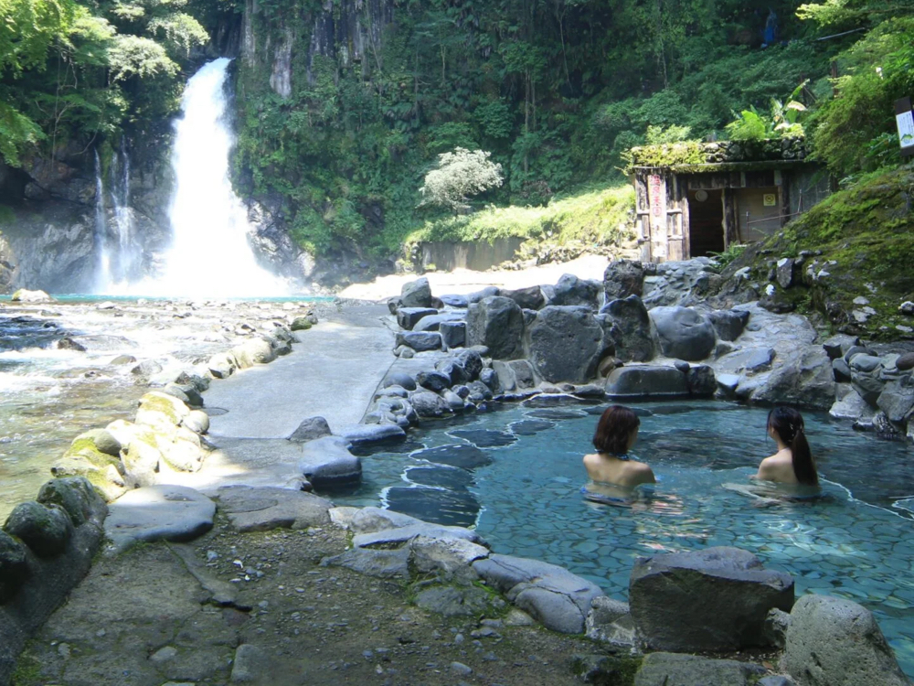

Definisi
Di Jepang, Onsen didefinisikan sebagai "air panas, air mineral, uap air, dan gas lainnya (tidak termasuk gas alam yang komponen utamanya adalah hidrokarbon) yang memancar dari dalam tanah dan memiliki suhu atau zat-zat yang terdaftar oleh sebuah undang-undang yang disebut "Undang-Undang Mata Air Panas".
Oleh karena itu, ketika suhu mencapai 25 derajat Celsius atau lebih, itu dianggap sebagai Onsen, dan ketika mengandung jumlah zat tertentu (satu atau lebih dari 19 item ini) bahkan ketika suhu kurang dari 25 derajat Celsius, itu dianggap sebagai Onsen pada saat yang sama. Dan selama kondisi tersebut terpenuhi, uap air atau gas juga dapat menjadi Onsen.
Dalam "Panduan untuk analisis Kosen" yang ditetapkan oleh Kementerian Lingkungan Hidup Pemerintah Jepang, untuk analisis komponen Onsen, Sanitation Spring didefinisikan sebagai jenis Onsen (tidak termasuk uap air dan gas lainnya) yang memiliki suhu atau zat yang telah terdaftar, dan dapat "digunakan khusus untuk tujuan penyembuhan."
Manfaat

Berendam atau mandi dengan air onsen (sumber air panas alami) telah lama dianggap memiliki manfaat terapi kesehatan. Berikut ini beberapa manfaat yang dikaitkan dengan penggunaan air onsen sebagai terapi:
- Relaksasi dan Stres Relief: Air onsen yang hangat dapat membantu mengurangi stres dan menciptakan perasaan relaksasi. Kandungan mineral seperti magnesium dan kalsium dalam air onsen dapat membantu melembutkan otot-otot, meredakan ketegangan, dan meningkatkan rasa nyaman.
- Meredakan Nyeri dan Kondisi Kulit: Air onsen mengandung mineral yang dapat membantu meredakan nyeri otot, sendi, dan kondisi seperti arthritis. Selain itu, beberapa jenis air onsen diketahui memiliki kandungan belerang yang dapat membantu dalam perawatan penyakit kulit seperti dermatitis dan psoriasis.
- Meningkatkan Sirkulasi Darah: Suhu air onsen yang hangat membantu meningkatkan aliran darah dalam tubuh. Hal ini dapat membantu meningkatkan sirkulasi darah, menyediakan oksigen dan nutrisi yang lebih baik ke seluruh tubuh, dan merangsang proses penyembuhan.
- Detoksifikasi: Air onsen mengandung mineral yang dapat membantu membersihkan dan detox tubuh melalui kulit. Proses berkeringat saat berendam di air onsen membantu mengeluarkan racun dan limbah dari tubuh.
- Pemulihan Keletihan dan Pemulihan Olahraga: Berendam dalam air onsen dapat membantu memulihkan keletihan otot setelah aktivitas fisik yang intens. Suhu dan mineral dalam air onsen dapat membantu mempercepat proses pemulihan dan mengurangi kekakuan otot.
Namun, penting untuk dicatat bahwa manfaat terapi air onsen dapat bervariasi tergantung pada jenis air onsen, kandungan mineral, suhu, dan kondisi kesehatan individu. Selalu konsultasikan dengan tenaga medis atau ahli kesehatan sebelum memulai terapi air onsen, terutama jika Anda memiliki kondisi medis tertentu.
Jenis Onsen
Onsen memiliki berbagai karakteristik seperti komposisi kimia, suhu, sifat cairan (pH), warna, bau, rasa, dan tekstur. Kualitas air mata air panas di Onsen ditentukan oleh senyawa kimia dan jumlah yang terkandung di dalamnya, dan dapat diklasifikasikan menjadi 10 tipe sebagai berikut. Jika suatu Onsen tidak memenuhi persyaratan sebagai mata air panas murni, maka tidak lagi disebut sebagai Onsen.
Dalam kasus tersebut, mata air panas tersebut digambarkan sebagai "Onsen yang diberikan dalam Undang-Undang Mata Air Panas" atau "Onsen yang diberikan dalam Pasal 2 Undang-Undang Mata Air Panas" dalam Analisis Mata Air Panas. Dahulu digunakan sebutan "nama kualitas mata air lama" seperti mata air berkarbonasi, mata air soda bakar, mata air garam, mata air pahit nyata, mata air mirabilite, mata air plester, mata air vitriol, dll., namun Kementerian Lingkungan Hidup memperbarui menjadi "nama kualitas mata air baru" yang nama-namanya menginformasikan komponen kimia utama dari masing-masing mata air pada tahun 1978.
1. Mata Air Sederhana
Standar
Mata air panas yang mengandung bahan-bahan terlarut dalam jumlah besar (tidak termasuk yang berbentuk gas) 1.000 mg/l atau kurang, dan suhu yang diukur di titik keluarnya adalah 25 derajat Celsius atau lebih. Di antaranya, yang memiliki pH 8,5 atau lebih tinggi disebut "Onsen alkalin Sederhana".
Karakteristik
Dijelaskan sebagai manis, tekstur ringan, dan sedikit iritasi pada kulit. Onsen alkalin Sederhana memberikan perasaan yang lembut saat berendam. Contohnya, Gero Onsen di Prefektur Gifu, Kakeyu Onsen di Prefektur Nagano, dll.
Indikasi untuk setiap kualitas air mata air
Untuk berendam: Ketidakstabilan otonom, Insomnia, dan Depresi
2. Mata Air Klorida
Standar
Mata air panas yang mengandung bahan-bahan terlarut dalam jumlah besar (tidak termasuk yang berbentuk gas) 1.000 mg/kg atau lebih, dan bahan utama dari ion-ion negatif adalah ion klorida.
Karakteristik
Diklasifikasikan sebagai mata air natrium-klorida, mata air kalsium-klorida, mata air magnesium-klorida, dll., tergantung pada bahan utama dari kation. Ini adalah jenis kualitas air mata air yang relatif besar di Jepang. Rasanya asin ketika dicicipi karena komponen utamanya adalah garam, dan ketika konsentrasi keasinannya tinggi atau mengandung jumlah magnesium yang besar, rasanya pahit. Contohnya, Atami Onsen di Prefektur Shizuoka, Katayamatsu Onsen di Prefektur Ishikawa, dll.
Indikasi untuk setiap kualitas air mata air
Untuk berendam: Luka, Gagal sirkulasi perifer, Sensitivitas berlebih terhadap dingin, Depresi, Kulit kering
Untuk minum: Gastritis atrofi, dan Konstipasi
Resort
Berikut adalah beberapa kelebihan yang dimiliki oleh Resort Onsen di Jepang dibandingkan dengan Onsen biasa:
- Fasilitas yang lengkap: Resort Onsen biasanya menawarkan fasilitas yang lebih lengkap dan beragam dibandingkan dengan Onsen biasa. Selain kolam mandi air panas alami (Onsen) yang mungkin lebih besar dan lebih mewah, mereka juga memiliki fasilitas seperti restoran, bar, spa, sauna, pusat kebugaran, dan berbagai kegiatan rekreasi untuk para tamu.
- Penginapan berkualitas: Resort Onsen seringkali menyediakan akomodasi berkualitas tinggi dengan pemandangan alam yang indah dan lingkungan yang tenang. Penginapan di resort tersebut dapat mencakup kamar-kamar mewah dengan fasilitas modern dan kenyamanan tambahan yang memastikan pengalaman menginap yang menyenangkan.
- Layanan yang ramah dan profesional: Resort Onsen umumnya dikenal karena pelayanannya yang sangat baik. Staf yang ramah dan profesional akan memberikan layanan perhotelan yang berkualitas, sehingga para tamu merasa dihargai dan dilayani dengan baik selama menginap.
- Pemandangan alam yang menakjubkan: Banyak Resort Onsen berlokasi di area pegunungan, di tepi laut, atau di dekat area alam yang indah. Para tamu dapat menikmati pemandangan alam yang menakjubkan dan suasana yang tenang dan menyegarkan selama berendam di Onsen.
- Aktivitas rekreasi dan hiburan: Selain berendam di Onsen, Resort Onsen menawarkan berbagai kegiatan rekreasi dan hiburan untuk para tamu. Mulai dari berjalan-jalan di sekitar alam, bersepeda, bermain golf, hingga mengikuti tradisi lokal seperti pesta api unggun dan penampilan seni tradisional.
- Privasi dan eksklusivitas: Beberapa Resort Onsen menawarkan fasilitas pribadi, seperti kolam Onsen pribadi atau villa dengan fasilitas mandi Onsen sendiri, yang memberikan kesempatan untuk menikmati momen berendam yang intim dan eksklusif.
- Aksesibilitas: Resort Onsen seringkali lebih mudah diakses oleh para wisatawan karena mereka biasanya berlokasi di dekat kota besar atau tujuan wisata populer, dan sering memiliki layanan transportasi yang nyaman.
Namun, penting untuk diingat bahwa fasilitas dan keunggulan Resort Onsen bervariasi tergantung pada tempat dan tingkat kemewahan. Beberapa Resort Onsen mungkin sangat mewah dan eksklusif, sementara yang lain lebih terjangkau dengan fasilitas yang lebih sederhana. Pilihan Resort Onsen akan tergantung pada preferensi pribadi dan anggaran wisatawan.